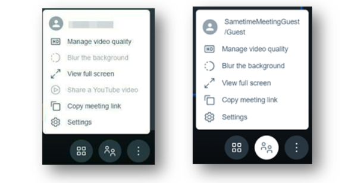

Copying a meeting link
The More Actions feature allows users to access the features within a meeting, roll over the bottom of the meeting window and click the three dots for settings.
Description
Depending on if the participant joins as an authenticated user vs guest, the following options will display in the More Actions section.

Copy meeting link
- Click this option to capture the URL for the current meeting.